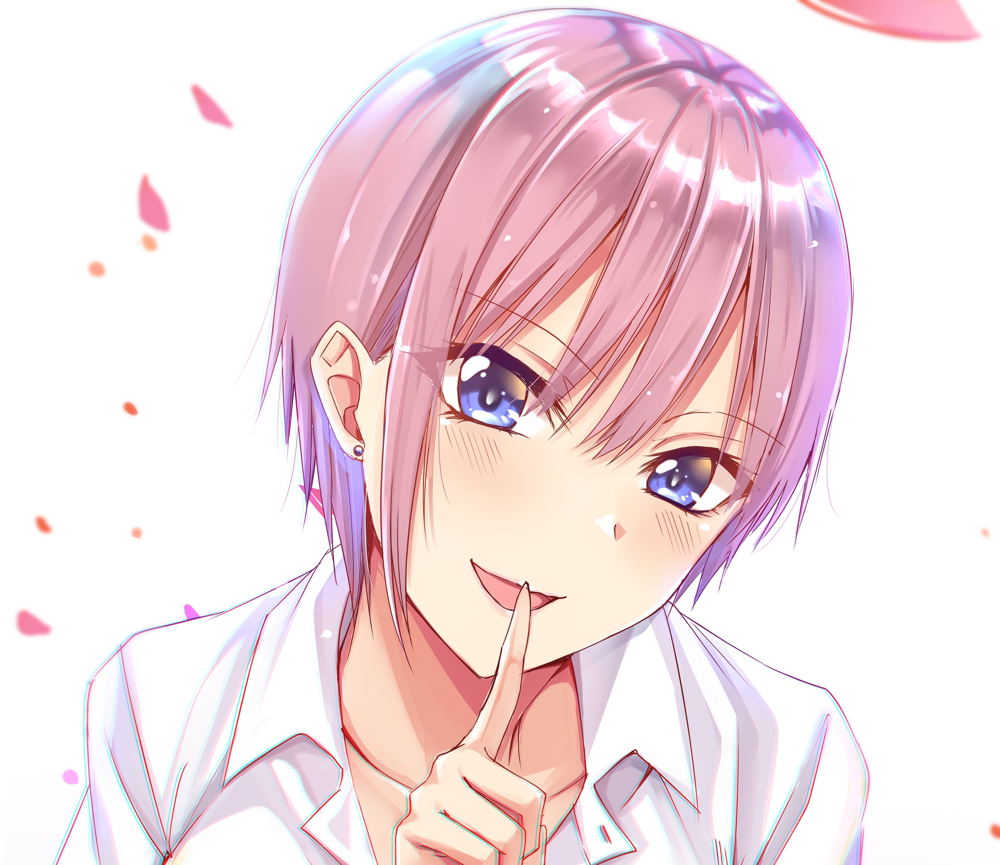

登場人物

声 - 花澤香菜[12]
五姉妹の長女。アシンメトリー調のショートヘアと右耳に填めたピアス[注 2]が特徴的。イメージカラーは黄色[20]。
からかい上手の小悪魔的な性格だが、面倒見のよいお姉さん気質。長姉として日頃から妹達のことを気にかけており[21]、同じ歳であるはずの風太郎にもお姉さんぶっては時折アドバイスを送っているものの、気遣いが行き過ぎてしまい、自分自身の気持ちを押し殺してしまいがち。また、そんな性分に反して私生活はかなりズボラで、自室は汚部屋と化しており、寝ている間にショーツ以外脱ぐ癖がある。
3年への進級後は風太郎に積極的にアプローチしようと試みており、時に他の姉妹を蹴落としてでも風太郎に想いを伝えようとする。
声 - 竹達彩奈[12]
五姉妹の次女。姫カットに切り揃えたスーパーロングヘア（後にボブカットにしている[22]）を、黒いリボンで結ったツーサイドアップが特徴的。
勝気でヒステリックな毒舌家[21]だが、姉妹で最も繊細であり、姉妹を守るために風太郎を敵視したり、姉妹全員で花火大会を見ようと奮闘するなど姉妹思い。料理好きでオシャレに気を遣うなど女子力が高く[21]、社交的で友人も多い。三玖曰く面食いであるとのこと。イメージカラーは黒[20]。
3年進級を機に家賃を姉妹で5等分することになってからは、風太郎と一緒にいたいがためにケーキ屋「REVIVAL」でバイトを始める。風太郎に対して積極的にアプローチしており、一花同様に他の姉妹に遠慮していないが、正々堂々とした方法で風太郎を振り向かせようと考えている。また、当初は「上杉」と呼び捨てであった風太郎のことを「フーくん」と呼ぶようになった。